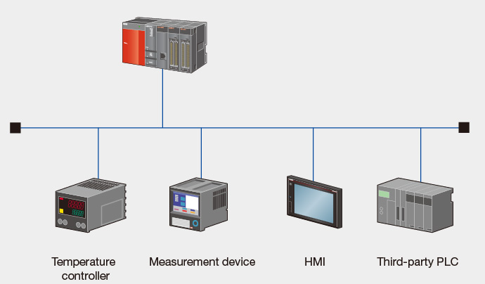

Controllers MELSEC-Q Series
Product features -Network-

MODBUS®
Connect with a large variety of devices using the MODBUS® interface module
MODBUS® interface module
- RS-232 1ch, RS-422/485 1ch
- 10BASE-T/100BASE-TX
- Using the master function, communicate with third-party MODBUS® compatible slave devices.
- Slave mode is also supported, which allows communication with other MODBUS® masters such as third-party programmable controllers.
- Using the QJ71MB91 synchronization function, a master station may be connected to CH1 (RS-232) and communicate with multiple slaves connected to the CH2 (RS‑422/485) interface.
- The QJ71MT91 module is able to operate using the master and slave functions simultaneously.
